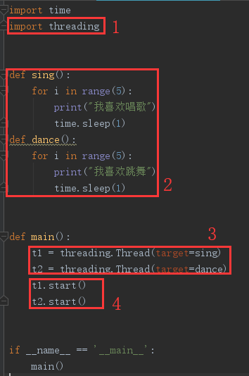
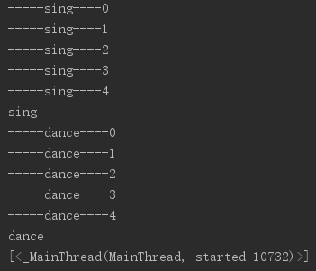
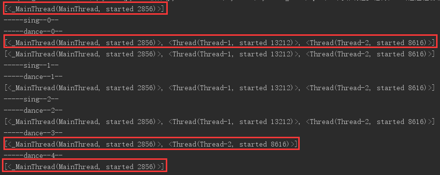
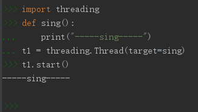
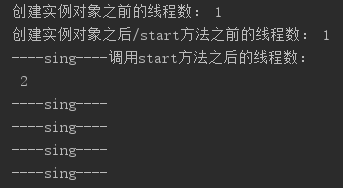

原文连接:https://www.cnblogs.com/yifchan/p/python-1-41.html
多任务介绍
我们先来看一下没有多任务的程序


import time
def sing():
for i in range(5):
print("我喜欢唱")
time.sleep(1)
def dance():
for i in range(5):
print("我喜欢跳")
time.sleep(1)
def main():
sing()
dance()
pass
if __name__ == "__main__":
main()运行结果：花了十秒钟多，只能按顺序执行，无法一起/同步执行
我喜欢唱
我喜欢唱
我喜欢唱
我喜欢唱
我喜欢唱
我喜欢跳
我喜欢跳
我喜欢跳
我喜欢跳
我喜欢跳
我们再来看一下使用了多线程的程序
import time
import threading
def sing():
for i in range(5):
print("我喜欢唱歌")
time.sleep(1)
def dance():
for i in range(5):
print("我喜欢跳舞")
time.sleep(1)
def main():
t1 = threading.Thread(target=sing)
t2 = threading.Thread(target=dance)
t1.start()
t2.start()
if __name__ == '__main__':
main()运行结果：花了五秒多一点，代码同步执行
我喜欢唱歌
我喜欢跳舞
我喜欢跳舞我喜欢唱歌
我喜欢跳舞
我喜欢唱歌
我喜欢跳舞
我喜欢唱歌
我喜欢跳舞
我喜欢唱歌
多任务
在这里我们可以由多任务额外扩展一些知识，电脑是怎么运行程序的？
单核cpu的运行原理：时间片轮转
单核cpu同一时间只能运行一个程序，但你看到的能运行很多程序是因为单核cpu的快速切换，即把一个程序拿过来运行极短的时间比如0.00001秒，就换运行下一个程序，如此往复，就是你看到的同一时间执行多个程序。这是操作系统实现多任务的一种方式，但其实是伪多任务。
时间片轮转的理念是，只要我切换的够快，你看到的就是我同时做多件事情，这是操作系统的调度算法。操作系统还有优先级调度，比如听歌要一直持续。
- 如果是多核cpu同时运行多个任务，我们就称之为并行，是真的多任务；任务数少于cpu数量；
- 如果是单核cpu切换着运行多个任务，我们就称之为并发，是假的多任务。任务数多于cpu数量；
- 但因为日常中，任务数一般多于cpu核数，所以我们说的多任务一般都是并发，即假的多任务；
Thread多线程
在前面我们已经看过了线程实现多任务，接下来我们学习线程的使用方法；
通过Thread(target=xxx)创建多线程
线程的使用步骤如下：
- 导入threading模块；
- 编写多任务所需要的的函数；
- 创建threading.Thread类的实例对象并传入函数引用；
- 调用实例对象的start方法，创建子线程。
如果你还不懂怎么使用多线程？没关系，看下面这个图就知道了

代码如下：
import time
import threading
def sing():
for i in range(5):
print("我喜欢唱歌")
time.sleep(1)
def dance():
for i in range(5):
print("我喜欢跳舞")
time.sleep(1)
def main():
t1 = threading.Thread(target=sing)
t2 = threading.Thread(target=dance)
t1.start()
t2.start()
if __name__ == '__main__':
main()注意：
- 函数名() 表示函数的调用
- 函数名 表示使用对函数的引用，告诉函数在哪；
代码解读
def main():
t1 = threading.Thread(target=sing)
t2 = threading.Thread(target=dance)
t1.start()
t2.start()每个函数在执行时都会有一个线程，我们称之为主线程；
当我们执行到
t1 = threading.Thread(target=sing)时，表示创建了一个Thread类的实例对象t1，并且给t1的Thread类中传入了sing函数的引用。
同理，t2也是如此；
当我们执行到
t1.start()时，这个实例对象就会创建一个子线程，去调用sing函数；然后主线程往下走，子线程去调用sing函数。
当主线程走到t2.start()时，再次创建一个子线程，子线程去调用dance函数，因为后面没有代码了，然后主线程就会等待所有子线程的完成，再结束程序/主线程；可以理解为主线程要给子线程死了之后收尸，然后主线程再去死。
主线程要等子线程执行结束的原因：子线程在执行过程中会调用资源以及产生一些变量等，当子线程执行完之后，
主线程要将这些无用的资源及垃圾进行清理工作。
多线程创建执行理解
我们可以使用如下代码获取当前程序中的所有线程；
threading.enumerate()关于enumerate的使用，可以查看我的上一篇博客 python内置函数之enumerate函数 ，但这里表示的是获取当前程序中的所有线程，可以不必看；
让某些线程先运行
因为 线程创建完后，线程的执行顺序是不确定的，如果我们想要让某个线程先执行，可以采用time.sleep的方法。代码如下
import time
import threading
def sing():
for i in range(5):
print("-----sing----%d" % i)
def dance():
for i in range(5):
print("-----dance----%d" % i)
def main():
t1 = threading.Thread(target=sing)
t2 = threading.Thread(target=dance)
t1.start()
time.sleep(1)
print("sing")
t2.start()
time.sleep(1)
print("dance")
print(threading.enumerate())
if __name__ == '__main__':
main()运行结果

我们可以看到，sing线程已经先运行了，但是此时查看的线程只有一个主线程，这是因为当子线程执行完了才执行到查看线程的代码。
循环查看当前运行的线程数
我们可以通过让子线程延时执行多次，主线程死循环查看当前线程数(适当延时)，即可看到当前运行的线程数量，当线程数量小于等于1时，使用break结束主线程。
代码如下
import time
import threading
def sing():
for i in range(5):
print("-----sing--%d--" % i)
time.sleep(1)
def dance():
for i in range(5):
print("-----dance--%d--" % i)
time.sleep(1)
def main():
t1 = threading.Thread(target=sing)
t2 = threading.Thread(target=dance)
t1.start()
t2.start()
while True:
t_len = len(threading.enumerate())
# print("当前运行线程数：%s" % t_len)
print(threading.enumerate())
if t_len <= 1:
break
time.sleep(1)
if __name__ == '__main__':
main()运行结果

可以看到，刚开始的时候只有一个是主线程，当子线程开始后，有三个线程，在sing子线程结束后，只剩两个线程了，dance结束后，只有一个主线程。
验证子线程的执行时间
为了验证子线程的执行时间，我们可以在交互式python下运行代码，子线程调用的函数在何时执行即代表子线程在何时执行；
验证结果如下

据此，我们可以判断子线程的执行是在线程的示例对象调用start()方法之后执行的。
验证代码
import threading
def sing():
print("-----sing-----")
t1 = threading.Thread(target=sing)
t1.start()
-----sing-----
验证子线程的创建时间
验证原理：我们可以通过计算线程数在各个时间段的数量来判断子线程的创建时间
验证代码
import time
import threading
def sing():
for i in range(5):
print("----sing----")
time.sleep(1)
def main():
print("创建实例对象之前的线程数：", len(threading.enumerate()))
t1 = threading.Thread(target=sing)
print("创建实例对象之后/start方法之前的线程数：", len(threading.enumerate()))
t1.start()
print("调用start方法之后的线程数：", len(threading.enumerate()))
if __name__ == '__main__':
main()验证结果

可以观察到在调用start方法之前线程数一直都是1个主线程，由此我们可以判断线程的创建时间是在调用了实例对象的start方法之后；
结合前面，我们可以得出结论，子线程的创建时间和执行时间是在Thread创建出来的实例对象调用了start方法之后，而子线程的结束时间是在调用的函数执行完成后。
通过继承Thread类来创建进程
前面我们是通过子线程调用一个函数，那么当函数过多时，想将那些函数封装成一个类，我们可以不可以通过子线程调用一个类呢？
创建线程的第二种方法步骤
- 导入threading模块；
- 定义一个类，类里面继承threading.Thread类，里面定义一个run方法；
- 然后创建这个类的实例对象；
- 调用实例对象的start方法，就创建了一个线程。
如果你创建一个线程的时候是通过 类继承一个Thread类来创建的，必须在里面定义run方法，当你调用start方法的时候，会自动调用run方法，接下来线程执行的就是run方法里面的代码。
通过继承Thread类来创建进程示例代码
import time
import threading
class TestThread(threading.Thread):
def run(self):
print("---run---")
for i in range(3):
msg = "我是%s,i--->%s" % (self.name, str(i)) # self.name中保存的是当前线程的名字
print(msg)
time.sleep(1)
def main():
t1 = TestThread()
t1.start()
if __name__ == '__main__':
main()运行结果
---run---
我是Thread-1,i--->0
我是Thread-1,i--->1
我是Thread-1,i--->2知识点
- 这种方法适用于一个线程里面要做的事情比较复杂，要封装成几个函数来做，那么我们就将它封装成一个类。
- 在类中定义其他的几个函数，可以在run里面进行调用这几个函数。
- 创建线程时使用哪种方法比较好？哪个简单使用哪个。
注意：
一个实例对象只能创建一个线程；
通过继承Thread类来创建进程时，不会自动调用类中除run函数的其他函数，如果想要调用其他可数，可以在run方法中使用self.xxx()来调用。
多线程共享变量
在函数中修改全局变量，如果是数字等不可变类型，要用global声明之后才能修改，如果是列表等可变类型，就可以不用声明，直接append等对列表内容进行修改，但，如果不是对列表内容进行修改，而是指向一个新的列表，就需要使用global声明；
在全局变量中，如果是对引用的数据进行修改，那么不需要使用global，如果是对全局变量的引用进行修改(直接换一个引用地址)，那么就需要使用global，同时，我们也应注意全局变量是可变类型还是不可变类型，比如数字，不可变，就只能通过修改变量的引用来进行修改全局变量了，所以需要global；
验证多线程中共享全局变量
验证原理：
定义一个全局变量，在函数1中加1，在函数2中查看，让线程控制的函数1先执行，如果线程函数2的查看结果和函数1的查看结果一样，那么就证明多线程之间共享全局变量。代码验证
import time
import threading
g_num = 100
def sing():
global g_num
g_num += 1
print("---sing中的g_num: %d---" % g_num)
time.sleep(1)
def dance():
print("---dance中的g_num: %d---" % g_num)
time.sleep(1)
def main():
t1 = threading.Thread(target=sing)
t2 = threading.Thread(target=dance)
t1.start()
t2.start()
print("---主线程中的g_num: %d---" % g_num)
if __name__ == '__main__':
main()运行结果
---sing中的g_num: 101---
---dance中的g_num: 101---
---主线程中的g_num: 101---如上代码我们可知，多线程之间共享全局变量。
我们可以将多线程之间共享去全局变量理解为：
一个房子里面有几个人，一个人就是一个线程，每个人有自己私有的东西资源，但在这个大房子里面，也有些共有的东西，比如说唯一一台饮水机的水，有一个人喝了一半，拿下一个人来接水，也只剩下一半了，这个饮水机里面的谁就是全局变量。
多线程给子线程传参
给子线程传参数语法如下
g_nums = [11, 22]
t1 = threading.Thread(target=sing, args=(g_num,))给子线程传参示例代码
import time
import threading
def sing(temp):
temp.append(33)
print("---sing中的g_nums: %s---" % str(temp))
time.sleep(1)
def dance(temp):
print("---dance中的g_nums: %s---" % str(temp))
time.sleep(1)
g_nums = [11, 22]
def main():
t1 = threading.Thread(target=sing, args=(g_nums,))
t2 = threading.Thread(target=dance, args=(g_nums,))
t1.start()
time.sleep(1)
t2.start()
time.sleep(1)
print("---主线程中的g_nums: %s---" % str(g_nums))
if __name__ == '__main__':
main()运行结果
---sing中的g_nums: [11, 22, 33]---
---dance中的g_nums: [11, 22, 33]---
---主线程中的g_nums: [11, 22, 33]---
多线程之间共享问题：资源竞争
共享全局变量存在资源竞争的问题，两个线程同时使用或者修改就会存在问题，一个修改一个使用不会存在；
传参100的时候可能不会出现问题，因为数字较小，概率也小点；但传参1000000的时候，数字变大，概率也变大；
num += 1可以分解为三句，获取num的值，给值加1，给num重赋值；有可能当线程1执行12句，正打算执行3句的时候，cpu就将资源给了线程2，而线程2同理，然后又执行线程1的第3句，因此线程1 +1，存储全局变量为1；轮到线程2 +1，存储全局变量也为1；问题就出现了，本来加两次应该是2的，但全局变量还是1。
资源竞争代码示例
import time
import threading
g_num = 0
def add1(count):
global g_num
for i in range(count):
g_num += 1
print("the g_num of add1:", g_num)
def add2(count):
global g_num
for i in range(count):
g_num += 1
print("the g_num of add2:", g_num)
def main():
t1 = threading.Thread(target=add1, args=(1000000,))
t2 = threading.Thread(target=add2, args=(1000000,))
t1.start()
t2.start()
time.sleep(3)
print("the g_num of main:", g_num)
if __name__ == '__main__':
main()运行结果
the g_num of add1: 1096322
the g_num of add2: 1294601
the g_num of main: 1294601
互斥锁解决资源竞争问题
原子性操作：要么不做，要么做完；
互斥锁：一个人做某事的时候，别人不允许做这件事，必须需得等到前面的人做完了这件事，才能接着做，例子景点上厕所。
互斥锁语法
# 创建锁：
mutex = threading.Lock()
# 上锁：
mutex.acquire()
# 解锁：
mutex.release()使用互斥锁解决资源竞争问题
import time
import threading
g_num = 0
def add1(num):
global g_num
for i in range(num):
mutex.acquire()
g_num += 1
mutex.release()
print("the g_num of add1:", g_num)
def add2(num):
global g_num
for i in range(num):
mutex.acquire()
g_num += 1
mutex.release()
print("the g_num of add2:", g_num)
mutex = threading.Lock()
def main():
t1 = threading.Thread(target=add1, args=(1000000,))
t2 = threading.Thread(target=add2, args=(1000000,))
t1.start()
t2.start()
time.sleep(2)
print("the g_num of main:", g_num)
if __name__ == '__main__':
main()运行结果
the g_num of add2: 1901141
the g_num of add1: 2000000
the g_num of main: 2000000可以看出，使用互斥锁可以解决资源竞争的问题。
死锁问题
使用互斥锁特别是多个互斥锁的时候，特别容易产生死锁，就是你在等我的资源，我在等你的资源；
本章内容总结
线程的生命周期
- 从程序开始执行到结束，一直都有一条主线程
- 如果主线程先死了，那么正在运行的子线程也会死。
- 子线程开始创建是在调用t.start()时，而不是创建Thread的实例化对象时。
- 子线程的开始执行是在调用t.start()时；
- 子线程的死亡时间是在子线程调用的函数执行完成后；
- 线程创建完后，线程的执行顺序是不确定的；
- 如果想要让某个线程先执行，可以采用time.sleep的方法。
创建多线程的两种方式
通过Thread(target=xxx)创建多线程
- 导入threading模块；
- 编写多任务所需要的的函数；
- 创建threading.Thread类的实例对象并传入函数引用；
- 调用实例对象的start方法，创建子线程。
通过继承Thread类来创建进程
- 导入threading模块；
- 定义一个类，类里面继承threading.Thread类，里面定义一个run方法；
- 然后创建这个类的实例对象；
- 调用实例对象的start方法，就创建了一个线程。
多线程理解
- 创建多线程可以理解为创建线程做准备；
- start() 则是准备好后直接创建并运行线程；
- 主线程要等子线程结束后在结束是为了清理子线程中可能产生的垃圾；
多线程共享全局变量
- 子线程和子线程之间共享全局变量；
- 给子线程传参可以使用 threading.Thread(target=sing, args=(g_num,)) 进行传参；
- 多线程之间可能存在资源竞争的问题；
- 可以使用互斥锁解决资源竞争的问题；